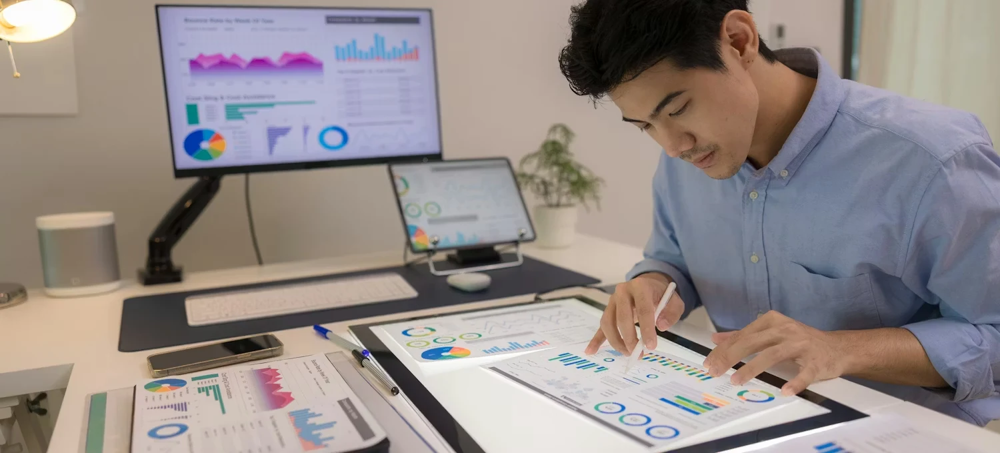

Every track, mapped end to end
Curriculum, skills, eligibility, timing, fees, outcomes and the mentors behind each line — everything you need before you pick where to board.
Four lines, four different destinations
Each one is rebuilt every cohort around what our 180+ hiring partners are actually interviewing for right now.
Web & Software Development
Ship a full production-grade app — frontend, backend, database, deploy — across three cohort projects.
See full breakdown
Data Science & Applied AI
Go from spreadsheets to shipped models — statistics, Python, SQL, and a capstone built on real datasets.
See full breakdownCloud & DevOps
Provision, deploy, and monitor infrastructure on AWS the way it's actually run in production teams.
See full breakdownDigital Marketing
Plan, run, and report on a real campaign brief — SEO, paid media, analytics, and content strategy.
See full breakdownFive stages, every track follows this shape
The names on the syllabus change per line — the shape of how you get from zero to shippable doesn't.
Foundations
Core concepts and tooling, paced for whatever level you walk in at — no one's left behind in week one.
Core build
Guided projects that mirror real sprints — reviewed by mentors the way a senior engineer reviews a PR.
Specialization sprint
Pick a focus area inside your track and go deep with a mentor who works in that specialty today.
Capstone project
One substantial, portfolio-ready build, presented and defended in front of a panel — like a real design review.
Every stage ends with a checkpoint review. If a checkpoint isn't cleared, you get one guided catch-up week before the cohort moves on — the roadmap slows down for you, it doesn't leave without you.
Skills and tools you'll walk out knowing
Every chip below is something you'll have used inside a real project, not just seen on a slide.
Web & Software (WD‑204)
Weeks 18–24 branch into an elective: mobile (React Native) or platform (GraphQL & microservices).
Data Science & AI (DS‑310)
Weeks 20–28 branch into an elective: applied ML or analytics & BI reporting.
Cloud & DevOps (CC‑402)
Weeks 14–20 branch into an elective: site reliability or platform security.
Digital Marketing (DM‑115)
Weeks 8–12 branch into an elective: performance marketing or brand & content.
Who each line is built for
No line requires a technical degree — every prerequisite below can be picked up in a free 2-week primer if you're missing it.
Web & Software Development
- Comfortable using a computer daily; no prior coding required
- 10–12 hrs/week outside live sessions for project work
- Best fit: career switchers, final-year students, freelancers going full-stack
Data Science & Applied AI
- Comfortable with spreadsheet formulas or basic scripting
- 12–14 hrs/week — the heaviest project load of the four lines
- Best fit: analysts, finance & ops professionals, STEM graduates
Cloud & DevOps
- Basic command-line familiarity helps but isn't mandatory
- 8–10 hrs/week plus lab time on AWS sandbox environments
- Best fit: sysadmins, QA/support engineers, backend devs going infra
Digital Marketing
- No technical background needed at all
- 6–8 hrs/week — our lightest weekly load
- Best fit: business grads, founders, anyone wanting a fast, practical entry
Compare every line at a glance
Same format as today's board, so you can weigh timing, fee, and fit before you commit to a seat.
Outcomes across all four lines
Pulled from the last six completed cohorts, refreshed every quarter.
Riders placed or promoted within 90 days of their capstone
Average starting CTC across all four tracks
Hiring partners actively recruiting from current cohorts
Average mentor rating across the last four cohorts
One mentor, one honest answer

"The biggest shift for most riders isn't learning to code — it's learning to build things the way a team actually ships them: reviewed, tested, and defended."
Arjun Nair
Senior Engineer, Northbeam · Mentors WD‑204
What a live session actually looks like

"Every session ends with code on screen, not just slides — you leave with something you built, not just notes you took."
— Cohort format, all tracksFrom application to orientation in four steps
Most riders move from first call to enrolled seat in under a week.
Apply
A 10-minute form covering your background, goals, and preferred cohort timing. No fee to apply.
Advisor call
A 20-minute conversation to confirm the right track and answer every question about pace and fit.
Offer & enroll
Secure your seat with a token payment; choose full payment, EMI, or a scholarship application.
Orientation
Meet your cohort and mentor a week before Day 1, with platform setup and pre-reading sent in advance.
"Most riders go from their first advisor call to an enrolled seat in under a week — no waiting on a follow-up email."
— Admissions teamWays to fund your seat
Every track fee shown on the comparison table above is the full, final price — no hidden platform or certification add-ons.
No-cost EMI
Split any track fee into 3, 6, or 12 monthly instalments through our lending partners, with zero processing fee for the 3-month plan.
Early enrollment discount
Lock in a seat 3+ weeks before a cohort starts and save up to 12% off the listed fee — reviewed and updated every cohort.
Scholarships
Merit-based and need-based scholarships are open each cohort for women in tech, career-break returners, and students from tier-2/3 towns.
Track-specific questions
Book a free advisor call — a 20-minute skills-and-goals conversation usually narrows it to one or two lines before you enroll in either.
We don't recommend it — the project workload is designed around one track at a time. Most riders who want a second line take it as a follow-on cohort.
Yes. Every line ends with one substantial, portfolio-ready build that's presented to a panel, not just submitted for grading.
Fees are locked for the cohort you enroll into. They're reviewed periodically as curriculum is updated, so earlier enrollment can mean a lower rate.
Yes — every track can be split into no-cost EMI over 3, 6, or 12 months, and scholarships open each cohort for eligible riders. See the financing section above for details.
Every session is recorded and posted within a few hours. Mentors also hold a weekly catch-up office hour for anyone who missed live delivery.